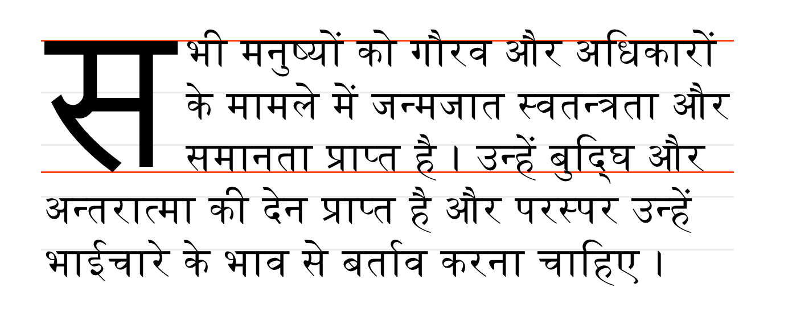
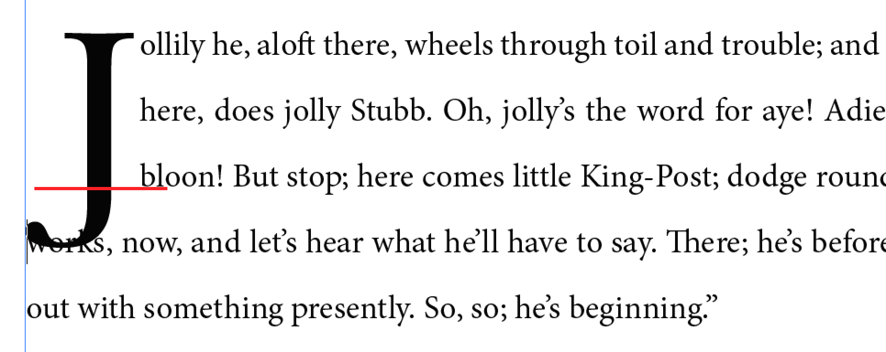
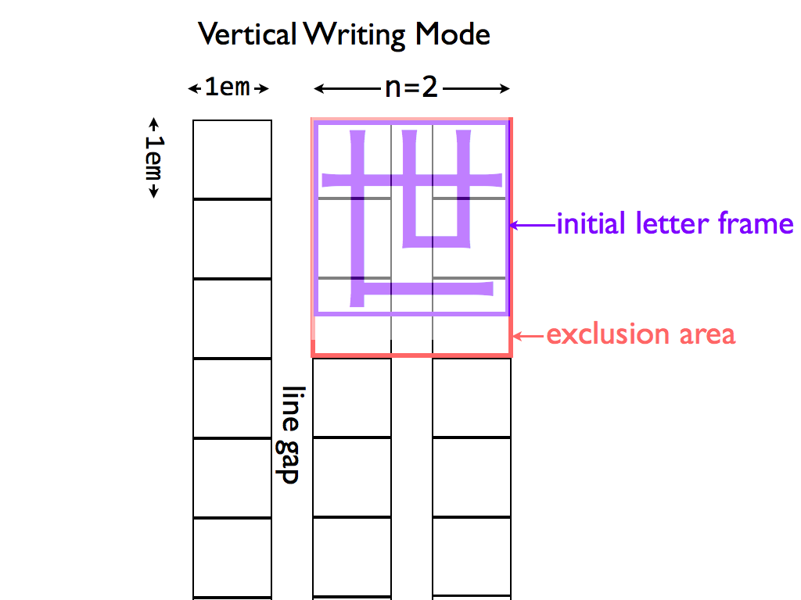

The CSS formatting model provides for a flow of elements and text inside of a container to be wrapped into lines. The formatting of elements and text within a line, its positioning in the inline progression direction, and the breaking of lines are described in [CSS3TEXT]. This module describes the positioning in the block progression direction both of elements and text within lines and of the lines themselves. This positioning is often relative to a baseline. It also describes special features for formatting of first lines and drop caps. It extends on the model in [CSS2].
CSS is a language for describing the rendering of structured documents
(such as HTML and XML)
on screen, on paper, in speech, etc.
Status of this document
This is a public copy of the editors’ draft.
It is provided for discussion only and may change at any moment.
Its publication here does not imply endorsement of its contents by W3C.
Don’t cite this document other than as work in progress.
The (archived) public mailing list www-style@w3.org (see instructions)
is preferred for discussion of this specification.
When sending e-mail,
please put the text “css-inline” in the subject,
preferably like this:
“[css-inline] …summary of comment…”
“At-risk” is a W3C Process term-of-art, and does not necessarily imply that the feature is in danger of being dropped or delayed. It means that the WG believes the feature may have difficulty being interoperably implemented in a timely manner, and marking it as such allows the WG to drop the feature if necessary when transitioning to the Proposed Rec stage, without having to publish a new Candidate Rec without the feature first.
1. Introduction
This module defines the CSS Inline Layout model,
replacing and extending the model as defined in CSS2.1.
It is very much a work-in-progress, and implementers should reference CSS2.1 for now.
The root inline box is an anonymous inline box
which is automatically generated to hold
all of the inline-level contents of a block container (if it has any).
It inherits from its parent block container,
but is otherwise unstyleable.
2. Line Heights and Baseline Alignment
This section is being rewritten. Refer to section 10.8 of [CSS2] for the normative CSS definition or the 2002 Working Draft if you want pretty pictures. (But ignore the old text, half of it’s wrong. We’re not specifying which half, that’s to be determined.) The CSS2 specification should be used as the guideline for implementation.
The CSSWG would like to know which baseline values are necessary: if any can be dropped, or any need to be added.
auto | text-bottom | alphabetic | ideographic | middle | central | mathematical | hanging | text-top
Initial:
normal
Applies to:
block containers and inline boxes
Inherited:
yes
Percentages:
N/A
Media:
visual
Computed value:
as specified
Animation type:
discrete
This property specifies the dominant baseline,
which is the baseline used to align the box’s text and inline-level contents.
Values have the following meanings:
Should be text-over and text-under instead of text-top and text-bottom,
but maybe it’s better not to use those terms for consistency with legacy vertical-align.
2.2. Transverse Box Alignment: the vertical-align property
Raise (positive value) or lower (negative value) by the specified percentage of the line-height.
sub
Lower by the offset appropriate for subscripts of the parent’s box.
(The UA should use the parent’s font data to find this offset whenever possible.)
super
Raise by the offset appropriate for superscripts of the parent’s box.
(The UA should use the parent’s font data to find this offset whenever possible.)
User agents may additionally support the keyword baseline as computing to 0 if is necessary for them to support legacy SVG content.
Issue: We would prefer to remove this, and are looking for feedback from SVG user agents as to whether it’s necessary.
3. Initial Letters
The editors would appreciate any examples of drop initials in non-western scripts, especially Arabic and Indic scripts.
3.1. An Introduction to Initial Letters
Large, decorative letters have been used to start new sections of text since before the invention of printing. In fact, their use predates lowercase letters entirely.
3.1.1. Drop Initial
A dropped initial#dropped-initialReferenced in:3.1.1.
Drop Initial3.3.
Creating Initial Letters: the initial-letter property (or “drop cap”) is a larger-than-usual letter at the start of a paragraph, with a baseline at least one line lower than the first baseline of the paragraph. The size of the drop initial is usually indicated by how many lines it occupies. Two- and three-line drop initials are very common.
Three-line drop initial with E acute. Since the cap-height of the drop initial aligns with the cap-height of the main text, the accent extends above the paragraph.
The exact size and position of a dropped initial depends on the alignment of its glyph. Reference points on the drop cap must align precisely with reference points in the text. In Western scripts, the top reference points are the cap height of the initial letter and of the first line of text. The bottom reference points are the alphabetic baseline of the initial letter and the baseline of the Nth line of text. Figure 2 shows a simple two-line drop cap, with the relevant reference lines marked.
Two-line drop cap showing baselines (green lines), cap-height (red line), and ascender (cyan line).
The alignment constraints for drop initials depend on the writing system. In ideographic scripts, the initial letter extends from the block-start edge of the first line to the block-end edge of the Nth line.
Two-line drop initial in vertical writing mode
In some Indic scripts, the top alignment point
is the hanging baseline,
and the bottom alignment point is the text-after-edge.

Devangari initial letter aligned with hanging baseline. Alignment points shown in red.
Note: A proper raised initial has several advantages
over simply increasing the font size of a first letter.
The line spacing in the rest of the paragraph
will not be altered, but text will still be excluded
around large descenders.
And if the size of raised initial is defined
to be an integral number of lines,
implicit baseline grids can be maintained.
Raised cap. The initial letter is the size of a 3-line initial, but does not drop.
3.2. Selecting Initial Letters
Initial letters are typically a single letter, although
they may include punctuation or a sequence of characters which
are perceived by the user to be a single typographic unit.
The ::first-letter pseudo-element, as defined in [SELECT], can be used to select an initial letter.
Authors who need more control over which characters are included in an initial letter, or who want to apply initial-letter formatting to replaced elements or multiple words can also apply the initial-letter property to the first inline-level child of a block container.
<p>This paragraph has a dropped “T”.
<p><img alt="H" src="illuminated-h.svg">ere we have an illuminated “H”.
<p><span>Words may also</span> be given initial letter styling at the beginning of a paragraph.
::first-letter, /* style first paragraph’s T */
img, /* style illuminated H */
span /* style phrase inside span */
{ initial-letter: 2; }
3.3. Creating Initial Letters: the initial-letter property
This optional second argument argument defines the number of lines the initial letter should sink. Values must be greater than zero. If omitted, it duplicates the first argument, floored to the nearest positive whole number.
Should this be initial-letters (plural) as originally discussed?
Since it can apply to multiple letters.
Add width/height as requested by Tantek... need to integrate with model.
3.3.2. Layout Model
An initial letter is laid out following the steps outlined below:
Find the used font size based on its initial-letter size, initial-letter-align alignment points, and font metrics.
Note that no layout is required in this step.
The font size used for sizing the initial letter contents does not affect its computed font-size property
(and therefore has no effect on the computation of em length values, etc.).
Size the initial letter’s content box.
The content box of a non-atomic inline initial letter
is the smallest rectangle required to include the entirety of its glyphs
as well as the margin boxes of any atomic inlines it contains.
The initial letter’s margin box is placed at the edge of the line.
If it has no padding or borders, it is negatively offset by the distance
from the start edge of its content box to the point in the content that
would have been placed at the start edge of the containing block if it had initial-letter: none.
Exclude content within the inline letter’s margin box
according to initial-letter-wrap.
3.3.3. Content-box Size, Margins, Borders, and Padding
Initial letters can be styled with margins, padding, and borders just like any other box.
Unless initial-letter-align is border-box,
its vertical alignment and sizing are not affected;
however the effective exclusion area is (and corresponds to the margin area).
When padding and borders are zero, the initial letter may be kerned; see below.
As mentioned earlier, the alignment of initial letters depends on the script used. The initial-letter-align property can be used to specify the proper alignment.
::first-letter pseudo elements and inline level first child of a block container
Inherited:
yes
Percentages:
N/A
Media:
visual
Computed value:
specified value
Animation type:
discrete
This property specifies the alignment points used to size and position an initial letter.
Two sets of alignment points are necessary:
the over and under alignment points of the initial letter are matched to corresponding over and under points of the surrounding text.
Values have the following meanings:
alphabetic
Use the alphabetic and cap-height baselines of the surrounding text
to align the initial letter.
ideographic
Use the ideographic character face bottom and top edge baselines of the surrounding text
to align the initial letter.
hebrew
Use the alphabetic and (as yet theoretical) hebrew hanging baseline of the surrounding text
to align the initial letter.
hanging
Use the alphabetic and hanging baselines of the surrounding text
to align the initial letter.
Else if the initial letter contains any character from the Han, Hangul, Kana, or Yi Unicode scripts,
use the ideographic character face bottom and top edge baselines.
Else if the initial letter contains any character from the Devanagari, Bengali, and Gurmukhi Unicode scripts,
use the hanging and alphabetic baselines.
Else if the initial letter contains any character from the Hebrew Unicode scripts,
use the ideographic character face bottom and top edge baselines.
Else use the alphabetic and cap-height baselines.
What is the proper alignment for South Asian scripts that do not have the explicit hanging baseline, such as Tamil or Telugu?
Note: The ordering of keywords in this property is fixed in case border-box is expanded to [ border-box | alphabetic | ideographic | hebrew | hanging ] to allow explicitly specifying the initial letter’s alignment points.
We don’t have a way to do subtag selection with attr selectors.
(It’s a feature of :lang() in Selectors 4,
but we don’t want to use that because we want to hit the language root,
not all of the descendant elements.)
These selectors should also include the relevant script subtags.
3.5. Sizing Initial Letters
The size of a drop initial is determined by the need to satisfy the required alignment. For an N-line drop initial in a Western script, the cap-height of the letter needs to be (N – 1) times the line-height, plus the cap-height of the surrounding text. Note this height is not the font size of the drop initial.
Actually calculating this font size is tricky. For an N-line drop initial, we find the drop initial font size to be:
A three-line drop initial in Adobe Minion Pro would have a font size of 61.2pt, given 12pt text, 16pt line-height and a cap-height of 651/1000 (from the font’s OS/2 table).
The line height used in this calculation is the line-height of the containing block (or, in the case where a baseline grid is in use, the baseline-to-baseline spacing required by the baseline grid [CSS3-LINE-GRID]). The contents of the lines spanned, and therefore any variation in their heights and positions, is not accounted for.
3.5.1. Shaping and Glyph Selection
When initial-letter is not normal, shaping does not occur across the box’s boundaries,
as if the zero-width non-joiner (U+200C) were inserted before/after the initial letter.
For example, if the first letter of the Farsi word “پس” were styled with initial-letter: 2 1,
both letters would be styled in their isolated forms,
with “پ” as the initial letter, followed by the normally-styled “س”.
Are there other things we need to consider here?
3.6. Space Around Initial Letters
The glyph(s) of an initial letter do not always fit within the specified sink. For example, if an initial letter has a descender, it could crash into the (n+1)th line of text. This is not desirable.

Incorrect: three-line initial letter with descender
Text is therefore excluded around the glyph bounding boxes of the initial letters.
Specifically, for non-atomic initial letters, the content box of the element is sized to fit:
The specified amount of sink (i.e the distance from the top alignment point to the bottom alignment point).
The actual ascent and descent and side bearings of all the glyphs it contains that are part of its inline formatting context, even if they leak outside their em boxes.
The margin boxes of all the atomic inlines it contains that are part of its inline formatting context, even if they leak outside its own line-height.
The margin box of the initial letter is then made an exclusion area for subsequent text.
In the inline axis, the position of the inline letter is given by aligning its start margin edge to the start edge of the containing block.
However, if the initial letter is a non-atomic inline with zero padding and borders, the UA must apply an additional negative offset on the start side of the amount necessary to optically align the first glyph to the containing block edge as it would be in normal text.
::first-letter pseudo-elements and inline-level first child of a block container
Inherited:
yes
Percentages:
relative to logical width of (last fragment of) initial letter
Media:
visual
Computed value:
as specified
Animation type:
discrete
This property specifies whether lines impacted by an initial letter are shortened to fit the rectangular shape of the initial letter box
or follow the contour of its end-edge glyph outline.
Behaves as none if
the first typographic character unit after the initial letter belongs to Unicode General Category Zs.
Otherwise behaves as for all on the first line of the block containing the initial letter
and as none on the rest.
This example shows why the contour-fitting the first line is necessary,
and why it is dropped when the initial letter is followed by a space:
In the top paragraph, the initial letter "A" has a word space after it:
the gap between the top of the "A" and the next letter provides the necessary word separation.
In the next paragraph, the initial letter "A" is part of the first word,
and leaving a gap between the top of the "A" and the next letter would create a jarring visual break within the word.
In this case, the first line of text should be kerned into the initial letter’s area, as shown in the bottom paragraph.
Do we need an unconditional first?
(I.e. Should we rename this value to auto and add a first value that does not check for spaces?)
For each line of text impacted by the initial letter, the line box adjacent to the intial letter starts at the start-most point that touches the ink of the initial letter, plus the amount of the initial letter’s end-side border+padding+margin.
Note: This value is at-risk.
grid
This value is the same as none,
except that the exclusion area of the impacted lines
is increased as necessary for its end-edge to land on the character grid.
The justify-self property can then be used to align the initial letter box
within the exclusion area.
The heuristic for matching the character grid is
1em × n + letter-spacing × (n - 1),
where n is the size of the initial letter
as specified by the initial-letter property,
and 1em represents the typical character advance width for ideographic characters
(and may be replaced by a more accurate value if known).

Diagram of Japanese initial letter in vertical writing mode
Note: In this example, the exclusion area for the drop initial
is larger than its glyph in order to preserve inline-axis alignment.
This value behaves the same as first except that the adjustment to the first line is given explicitly
instead of being inferred from the glyph shape.
This really needs font-relative lengths to be relative to the used size.
Note: This value exists because it is easier to implement.
Authors are encouraged to use the first value
and to set margins to control spacing,
and to use this as a fallback for glyph detection if necessary.
In the following example, UAs that support first will use the glyph outline
plus the specified margin in order to place the first line,
whereas UAs that only support <length> or <percentage> values
will pull in the first line by 40% of the initial letter’s width
(and then add the margin to that point).
h1 + p:first-letter {
initial-letter: 3; /* 3-line drop-cap */
initial-letter-wrap: first;
margin-right: 0.1em;
}
@supports (not (initial-letter-wrap: first)) {
/* Classes auto-generated on paragraphs to match first letter. */
p.A:first-letter {
initial-letter-wrap: -40%; /* Start of glyph outline, assuming correct font. */
}
}
These values and related annoyance is likely unnecessary if someone submits a patch to Blink to support first.
Edit figure to show how auto behaves in varying contexts
Only the first line is moved up against the ink of the initial letter.
3.9. Indentation and Multi-line Effects
text-indent and hanging-punctuation apply to the first line of text as normal in the presence of initial letters. Lines affected by the exclusion are shortened, as in the presence of floats, and are affected the same way.
If an initial letter is too long to fit on one line, it wraps (according to the usual text-wrapping rules), each line filled and formatted exactly as if it were the first line and the initial letter too long to fit any subsequent normal text. Any normal text after the initial letter starts on its last line, affected exactly as if that line were the first line.
Drop cap extends to two lines.
3.10. Clearing Initial Letters
3.10.1. Raised and sunken caps
An initial letter does not affect the position of its containing element. For “raised caps” or “sunken caps,” the effect is created as if the text around the initial letter was pushed down, rather than the letter extending up into previous elements.
Raised cap (initial-letter: 3 1) on right; note that the position of the “C” is the same in both cases, but on the right all text is moved down relative to the initial letter.
Handle glyph ink above cap height of font.
3.10.2. Short paragraphs with initial letters
A paragraph with an initial letter can have fewer lines of text than the initial letter occupies. In this case, the initial letter’s top alignment is still honored, and its exclusion area continues into any subsequent blocks. This forces the subsequent inline-level content to wrap around the initial letter—exactly as if that block’s text were part of its own containing block. (This is similar to how floats exclude content in subsequent block boxes.)
The red text is a short paragraph with an initial letter. Note the subsequent paragraph wraps around the initial letter just as text in the paragraph with the initial letter does.
If the subsequent block starts with an initial letter,
establishes a new formatting context,
or specifies clear in the initial letter’s containing block’s start direction,
then it must clear the previous block’s initial letter.
The red text is a short paragraph with an initial letter. The subsequent paragraph clears because it also has an initial letter.
3.10.3. Interaction with floats
Floats always clear an initial letter when floated to the same side. When floated to the opposite side, they are pushed down to clear the initial letter only if they have specified clear to this side or they do not fit without overlapping the initial letter.
Is this the behavior we want? What if the float is on the same line as the initial letter?
Appendix A: Synthesizing Baselines
A.1: Synthesizing Baselines for Text
Some fonts may not contain the baseline information necessary to align properly as described above.
User agents may follow these steps in the absence of a required metric:
Measure the font.
Describe in more detail.
Should we document which characters in which scripts are useful,
such as lowercase "o" to measure x-height? See https://drafts.csswg.org/css-values/#ex
Use a heuristic for the script.
Use fallback values:
x-height: .5em;
cap-height: .66em;
hanging baseline: .6em;
A.2: Synthesizing Baselines for Replaced Content
Copy over text from CSS Writing Modes and expand for additional baseline values.
Note: Authors can use margins (positive or negative)
to adjust the alignment of replaced content within a line.
In this example, the author is using a set of images
to display characters that don’t exist.
img[src^="/text/"] {
height: 1em; /* Size to match adjacent text */
margin-bottom: -0.2em; /* Baseline at 20% above bottom */
}
...
<p>This is some text with words written in an unencoded script:
<img src="/text/ch3439.png" alt="...">
<img src="/text/ch3440.png" alt="...">
<img src="/text/ch3442.png" alt="...">
Note: A future level of CSS may include a way of specifying a full baseline table for replaced elements.
(This will probably look like a baseline-table property
that accepts ''[<baseline-keyword> <percentage>]+''.)
Acknowledgments
Special thanks goes to the initial authors,
Eric A. Meyer and Michel Suignard.
In additions to the authors, this specification would not have been possible without the help from:
David Baron, John Daggett, Stephen Deach, Sujal Parikh, Grzegorz Zygmunt, Chris Wilson, David M Brown, Bobby Tung, Shinyu Murakami, David Hyatt, Sylvain Galineau, Alan Stearns, Ted O’Connor, Florian Rivoal.
Conformance
Document conventions
Conformance requirements are expressed with a combination of
descriptive assertions and RFC 2119 terminology. The key words “MUST”,
“MUST NOT”, “REQUIRED”, “SHALL”, “SHALL NOT”, “SHOULD”, “SHOULD NOT”,
“RECOMMENDED”, “MAY”, and “OPTIONAL” in the normative parts of this
document are to be interpreted as described in RFC 2119.
However, for readability, these words do not appear in all uppercase
letters in this specification.
All of the text of this specification is normative except sections
explicitly marked as non-normative, examples, and notes. [RFC2119]
Examples in this specification are introduced with the words “for example”
or are set apart from the normative text with class="example",
like this:
This is an example of an informative example.
Informative notes begin with the word “Note” and are set apart from the
normative text with class="note", like this:
Note, this is an informative note.
Advisements are normative sections styled to evoke special attention and are
set apart from other normative text with <strong class="advisement">, like
this: UAs MUST provide an accessible alternative.
Conformance classes
Conformance to this specification
is defined for three conformance classes:
A style sheet is conformant to this specification
if all of its statements that use syntax defined in this module are valid
according to the generic CSS grammar and the individual grammars of each
feature defined in this module.
A renderer is conformant to this specification
if, in addition to interpreting the style sheet as defined by the
appropriate specifications, it supports all the features defined
by this specification by parsing them correctly
and rendering the document accordingly. However, the inability of a
UA to correctly render a document due to limitations of the device
does not make the UA non-conformant. (For example, a UA is not
required to render color on a monochrome monitor.)
An authoring tool is conformant to this specification
if it writes style sheets that are syntactically correct according to the
generic CSS grammar and the individual grammars of each feature in
this module, and meet all other conformance requirements of style sheets
as described in this module.
Requirements for Responsible Implementation of CSS
The following sections define several conformance requirements
for implementing CSS responsibly,
in a way that promotes interoperability in the present and future.
Partial Implementations
So that authors can exploit the forward-compatible parsing rules to assign fallback values, CSS renderers must treat as invalid
(and ignore as appropriate)
any at-rules, properties, property values, keywords, and other syntactic constructs
for which they have no usable level of support.
In particular, user agents must not selectively ignore
unsupported property values and honor supported values in a single multi-value property declaration:
if any value is considered invalid (as unsupported values must be),
CSS requires that the entire declaration be ignored.
Implementations of Unstable and Proprietary Features
Once a specification reaches the Candidate Recommendation stage,
implementers should release an unprefixed implementation
of any CR-level feature they can demonstrate
to be correctly implemented according to spec,
and should avoid exposing a prefixed variant of that feature.
To establish and maintain the interoperability of CSS across
implementations, the CSS Working Group requests that non-experimental
CSS renderers submit an implementation report (and, if necessary, the
testcases used for that implementation report) to the W3C before
releasing an unprefixed implementation of any CSS features. Testcases
submitted to W3C are subject to review and correction by the CSS
Working Group.
none | first | all | grid | <length> | <percentage>
none
::first-letter pseudo-elements and inline-level first child of a block container
yes
relative to logical width of (last fragment of) initial letter
visual
discrete
as specified
Issues Index
This section is being rewritten. Refer to section 10.8 of [CSS2] for the normative CSS definition or the 2002 Working Draft if you want pretty pictures. (But ignore the old text, half of it’s wrong. We’re not specifying which half, that’s to be determined.) The CSS2 specification should be used as the guideline for implementation. ↵
The CSSWG would like to know which baseline values are necessary: if any can be dropped, or any need to be added. ↵
Should be text-over and text-under instead of text-top and text-bottom,
but maybe it’s better not to use those terms for consistency with legacy vertical-align. ↵
The editors would appreciate any examples of drop initials in non-western scripts, especially Arabic and Indic scripts. ↵
Should this be initial-letters (plural) as originally discussed?
Since it can apply to multiple letters. ↵
Define interaction with ruby. Easiest is to make it not apply to/within ruby. ↵
Add width/height as requested by Tantek... need to integrate with model. ↵
Is there proper a typographic term for the hebrew “hanging” baseline? ↵
What is the proper alignment for South Asian scripts that do not have the explicit hanging baseline, such as Tamil or Telugu? ↵
We don’t have a way to do subtag selection with attr selectors.
(It’s a feature of :lang() in Selectors 4,
but we don’t want to use that because we want to hit the language root,
not all of the descendant elements.)
These selectors should also include the relevant script subtags. ↵
Are there other things we need to consider here? ↵
Do we need an unconditional first?
(I.e. Should we rename this value to auto and add a first value that does not check for spaces?) ↵
This really needs font-relative lengths to be relative to the used size. ↵
These values and related annoyance is likely unnecessary if someone submits a patch to Blink to support first. ↵
Edit figure to show how auto behaves in varying contexts ↵
Is this the behavior we want? What if the float is on the same line as the initial letter? ↵
Describe in more detail.
Should we document which characters in which scripts are useful,
such as lowercase "o" to measure x-height? See https://drafts.csswg.org/css-values/#ex ↵
Copy over text from CSS Writing Modes and expand for additional baseline values. ↵